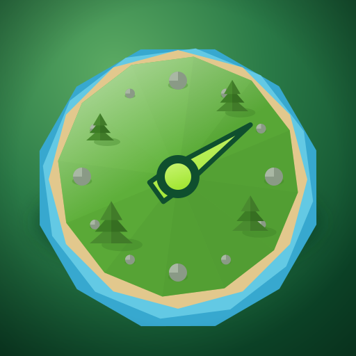
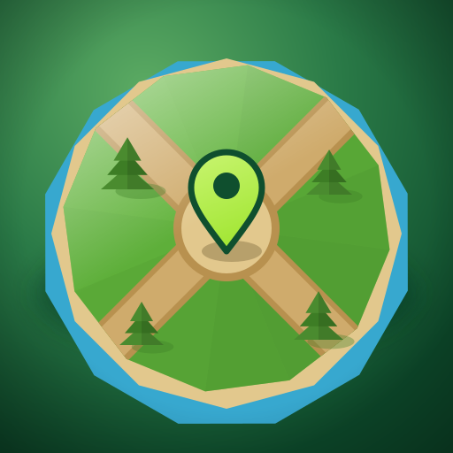
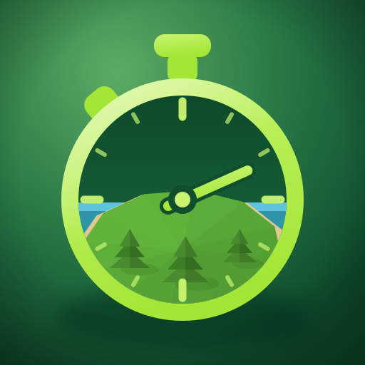

Аватарка бота. Кружком показано, как обрежет Telegram; справа — размеры из списка чатов.

А — остров-часы
островок и есть циферблат: камни по кругу вместо цифр
Тайм-трекер
bot

Б — перекрёсток
композиция карты: дороги сходятся к метке
Тайм-трекер
bot

В — секундомер
самая крупная форма, внутри — кусочек мира
Тайм-трекер
bot